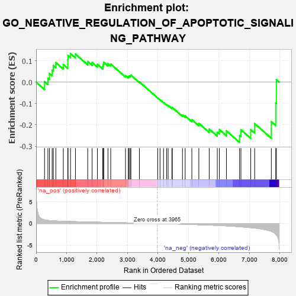
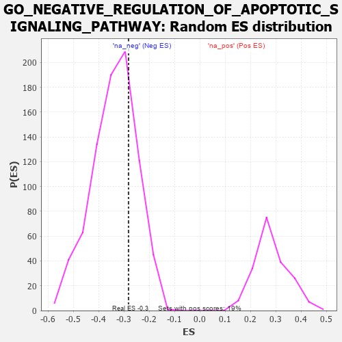

| | | Dataset | 7d |
| Phenotype | NoPhenotypeAvailable |
| Upregulated in class | na_neg |
| GeneSet | GO_NEGATIVE_REGULATION_OF_APOPTOTIC_SIGNALING_PATHWAY |
| Enrichment Score (ES) | -0.2817244 |
| Normalized Enrichment Score (NES) | -0.8326912 |
| Nominal p-value | 0.7259259 |
| FDR q-value | 0.9792077 |
| FWER p-Value | 1.0 |
Table: GSEA Results Summary

Fig 1: Enrichment plot: GO_NEGATIVE_REGULATION_OF_APOPTOTIC_SIGNALING_PATHWAY
Profile of the Running ES Score & Positions of GeneSet Members on the Rank Ordered List
| PROBE | GENE SYMBOL | GENE_TITLE | RANK IN GENE LIST | RANK METRIC SCORE | RUNNING ES | CORE ENRICHMENT | | 1 | HGF | | | 276 | 0.870 | 0.0022 | No |
| 2 | BAX | | | 387 | 0.711 | 0.0186 | No |
| 3 | RRN3 | | | 438 | 0.667 | 0.0407 | No |
| 4 | HTRA2 | | | 527 | 0.621 | 0.0560 | No |
| 5 | NLE1 | | | 565 | 0.609 | 0.0772 | No |
| 6 | NOC2L | | | 647 | 0.578 | 0.0916 | No |
| 7 | HMGB2 | | | 892 | 0.507 | 0.0824 | No |
| 8 | AKT1 | | | 1040 | 0.476 | 0.0841 | No |
| 9 | YAP1 | | | 1041 | 0.475 | 0.1043 | No |
| 10 | TAF9 | | | 1046 | 0.475 | 0.1240 | No |
| 11 | SRC | | | 1128 | 0.459 | 0.1333 | No |
| 12 | PARL | | | 1290 | 0.432 | 0.1314 | No |
| 13 | HYOU1 | | | 1692 | 0.358 | 0.0960 | No |
| 14 | GATA4 | | | 1837 | 0.330 | 0.0919 | No |
| 15 | RAF1 | | | 2011 | 0.303 | 0.0830 | No |
| 16 | MEIS3 | | | 2188 | 0.278 | 0.0726 | No |
| 17 | ATAD5 | | | 2197 | 0.277 | 0.0834 | No |
| 18 | TRAP1 | | | 2219 | 0.274 | 0.0924 | No |
| 19 | MIF | | | 2357 | 0.252 | 0.0858 | No |
| 20 | KDM1A | | | 2447 | 0.237 | 0.0847 | No |
| 21 | ACVR1 | | | 2932 | 0.161 | 0.0304 | No |
| 22 | WNT4 | | | 3023 | 0.146 | 0.0253 | No |
| 23 | BIRC6 | | | 3047 | 0.143 | 0.0285 | No |
| 24 | HDAC1 | | | 3086 | 0.138 | 0.0296 | No |
| 25 | GPX1 | | | 3109 | 0.135 | 0.0326 | No |
| 26 | DDX3X | | | 3388 | 0.091 | 0.0013 | No |
| 27 | EYA1 | | | 3987 | -0.006 | -0.0739 | No |
| 28 | SFRP2 | | | 4065 | -0.018 | -0.0828 | No |
| 29 | PDX1 | | | 4179 | -0.038 | -0.0955 | No |
| 30 | PSME3 | | | 4280 | -0.056 | -0.1057 | No |
| 31 | OPA1 | | | 4330 | -0.065 | -0.1091 | No |
| 32 | SYVN1 | | | 4454 | -0.085 | -0.1210 | No |
| 33 | LRRK2 | | | 4467 | -0.087 | -0.1188 | No |
| 34 | TERT | | | 4801 | -0.157 | -0.1541 | No |
| 35 | CLU | | | 4889 | -0.174 | -0.1577 | No |
| 36 | MMP9 | | | 5108 | -0.227 | -0.1755 | No |
| 37 | SGK3 | | | 5338 | -0.282 | -0.1924 | No |
| 38 | CASP8 | | | 5678 | -0.369 | -0.2195 | No |
| 39 | PCGF2 | | | 5943 | -0.451 | -0.2336 | No |
| 40 | XBP1 | | | 6011 | -0.475 | -0.2218 | No |
| 41 | VDAC2 | | | 6242 | -0.553 | -0.2273 | No |
| 42 | RFFL | | | 6674 | -0.749 | -0.2498 | Yes |
| 43 | GSK3B | | | 6719 | -0.768 | -0.2227 | Yes |
| 44 | RNF34 | | | 7040 | -0.963 | -0.2221 | Yes |
| 45 | AR | | | 7169 | -1.046 | -0.1937 | Yes |
| 46 | BOK | | | 7715 | -1.817 | -0.1852 | Yes |
| 47 | TRAF2 | | | 7861 | -2.481 | -0.0978 | Yes |
| 48 | FYN | | | 7881 | -2.622 | 0.0114 | Yes |
Table: GSEA details [plain text format]

Fig 2: GO_NEGATIVE_REGULATION_OF_APOPTOTIC_SIGNALING_PATHWAY: Random ES distribution
Gene set null distribution of ES for GO_NEGATIVE_REGULATION_OF_APOPTOTIC_SIGNALING_PATHWAY